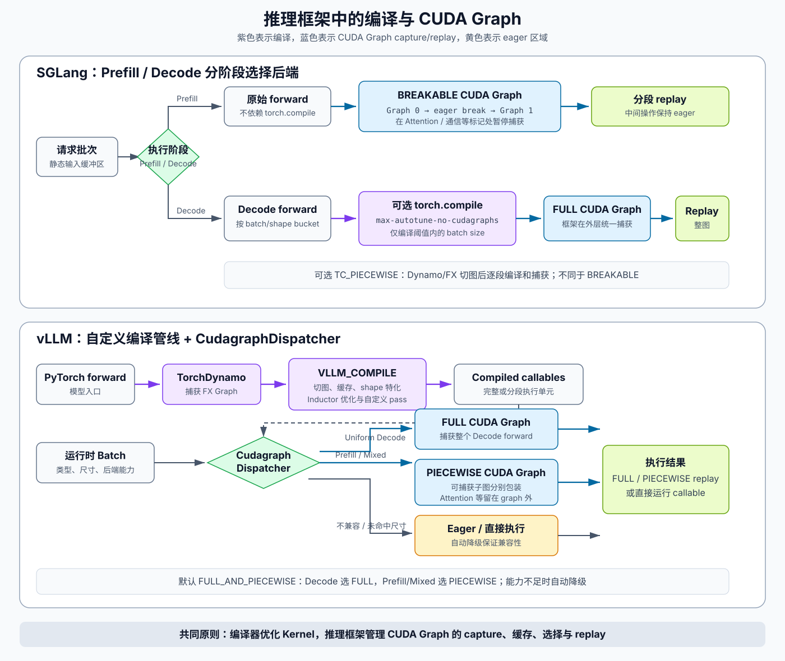

torch.compile 原理¶
快速复习¶
- Dynamo 捕获 Python frame，产出 FX graph、剩余字节码和运行时 Guards。
- Graph Break 会退回 eager 后继续捕获；它不一定报错，但会缩小跨算子优化范围。
- AOTAutograd 为已捕获的前向图生成可编译 backward，并决定保存还是重算激活。
- Inductor 是默认 backend，负责调度、融合并生成 Triton/C++ 等目标代码。
- 性能评估必须分开看编译时间、重编译次数与 warm-up 后的稳态性能。
1. 它解决的不是“把 Python 编译掉”¶
PyTorch eager mode 每个算子都从 Python/dispatcher 发起执行，易调试、支持动态控制流，但会产生 Python 调度、kernel launch 和中间张量读写开销。torch.compile 的目标是在保留大部分 Python 语义的前提下，捕获可编译区域并生成优化后的 CPU/GPU 代码。
默认编译链路可以概括为：
Python frame
│
▼
TorchDynamo ── FX Graph + Guards + residual bytecode
│
▼
AOTAutograd / AOTDispatcher
├── functionalization / decomposition
└── forward graph + backward graph（训练）
│
▼
TorchInductor
├── 调度、融合、布局与内存规划
├── Triton kernels（GPU）
└── C++ kernels（CPU）
│
▼
运行时检查 Guards → 命中缓存 / 重编译 / eager fallback
官方 torch.compiler 概览 将核心组件定义为 TorchDynamo、AOTAutograd 和 TorchInductor。
| 阶段 | 输入 | 主要职责 | 输出 |
|---|---|---|---|
| Dynamo | Python frame 与真实程序状态 | 字节码级追踪、切分可编译区域、建立 Guards | FX graph 与剩余字节码 |
| AOTAutograd | 捕获到的前向图 | 函数化、分解、生成并切分 forward/backward | 较低层的 ATen 图 |
| Inductor | ATen/FX 图与 shape/stride 信息 | 调度、融合、内存规划、代码生成 | Triton、C++ 或外部库调用 |
| 运行时 | 新输入和已编译产物 | 检查 Guards、选择缓存、必要时重编译 | 实际执行结果 |
2. TorchDynamo：从 Python 字节码捕获 FX 图¶
Dynamo 利用 CPython Frame Evaluation API 接管 frame 执行，并通过自定义字节码解释器追踪 Python 程序。遇到张量运算时，它不会立刻执行所有 eager 算子，而是把可捕获语义记录成 FX graph；未进入图的 Python 工作则保留为 residual bytecode。
Guards 为什么存在¶
一次 trace 只观察到一组具体输入。编译器可能据此假设：
- 输入是 Tensor，dtype/device/shape/stride 符合预期；
- 某个 Python 整数、布尔值或模块属性不变；
- 全局状态、训练模式或对象结构没有改变。
这些假设被编码成 Guards（守卫条件）。再次调用时：
- Guard 成立：直接复用已编译结果；
- Guard 失败：为新条件重新捕获和编译；
- 超过重编译限制：可能回退 eager。
所以编译产物不是“对所有输入天然通用”，而是带适用条件的特化程序。Dynamo 的 trace、Guard 和重编译模型见官方 Dynamo Core Concepts。
Graph Break 是什么¶
遇到无法捕获或不适合捕获的 Python 行为时，Dynamo 结束当前 FX graph，执行那段 eager 代码，再从后续位置继续捕获。常见来源包括依赖 Tensor 数据的 Python 控制流、打印、部分第三方扩展和不受支持的操作。
@torch.compile
def f(x):
y = x.sin()
if y.sum().item() > 0: # Python 分支依赖运行时 Tensor 数据
y = y * 2
return y.cos()
这里 .item() 把 Tensor 值带回 Python，再由 Python 决定分支。默认配置下它通常会造成 Graph Break；即使启用相关捕获能力，两个分支仍需要用条件和 Guards 正确表达，不能简单视为一张固定直线图。
Graph Break 不一定导致错误，但会：
- 把大图切成多个小图；
- 阻断跨边界的算子融合和内存规划；
- 增加 Python 往返及 kernel launch；
- 在循环内部发生时尤其昂贵。
调试时使用 fullgraph=True，要求目标函数被捕获成单图；无法做到时会报错。它适合发现边界问题，但不是所有生产负载都必须开启。
3. AOTAutograd：让 backward 也成为可优化的图¶
Dynamo 捕获正在执行的 Python frame，但通常的 .backward() 由 autograd engine 驱动，并不是再次执行一段用户 Python backward。AOTAutograd 基于已经捕获的前向区域提前构造 forward/backward 图，使两者都能交给 backend 编译。
其中几个关键步骤是：
- functionalization：把 mutation/view 等复杂语义转换为更便于编译器分析的函数式表示，同时保持外部语义；
- decomposition：把复杂高层算子分解为后端更容易处理的核心算子集合；
- partition：把联合 forward/backward 图切分，决定 forward 要为 backward 保存什么；
- recomputation：min-cut partitioner 可以权衡保存激活和反向重算，从而影响峰值显存。
默认路径下，用户调用 .backward() 仍由 eager autograd engine 调度，但每个已编译的 backward graph 会像一个较大的 autograd 节点一样执行；这不等于整个 autograd engine 都被编译。另行启用的 Compiled Autograd 能扩大 backward 捕获范围，属于更进一步的机制。官方 compiler FAQ 给出了默认路径。
4. TorchInductor：从 ATen/FX 图到高效内核¶
Inductor 是默认 backend。它接收较低层的图，构建循环级中间表示，进行依赖分析、调度、融合和代码生成：
- GPU 主要生成 Triton kernel，也会调用外部高性能库；
- CPU 主要生成 C++/向量化代码；
- 点运算可与 reduction 或矩阵乘模板的 epilogue 融合；
- 减少中间张量写回显存和重复读入；
- 针对具体 shape/stride 选择调度，并缓存生成结果。
生成结果不一定全部是自定义 Triton/C++ kernel。对 GEMM 等成熟算子，Inductor 也会保留或选择高性能外部库/模板实现，再尝试融合其前后处理。
速度提升通常来自两部分：减少 Python/kernel launch 开销，以及通过融合减少 GPU memory traffic；并非所有模型都能加速。大算子已经接近计算瓶颈、图被频繁打断或输入导致持续重编译时，收益可能很小。
5. 动态形状与特化的权衡¶
静态 shape 便于选择更激进的调度，但 batch size、序列长度变化会让 Guard 失败。dynamic 参数控制策略：
dynamic=False：对 shape 特化，不同 shape 通常重新编译；dynamic=True：尽量从一开始生成符号 shape kernel；dynamic=None（默认）：先假设静态，发现维度变化后尝试把相应维度推广为动态。
动态 kernel 不是免费午餐：某些优化仍要求特化，数据依赖的输出大小也更难处理；PyTorch 支持动态维度，但不支持输入 Tensor 的 rank 任意变化。应先通过 recompilation 日志找出变化维度，再决定是否显式动态化。详见官方 Dynamic Shapes。
6. 常用模式¶
compiled_model = torch.compile(
model,
backend="inductor",
mode="default",
fullgraph=False,
dynamic=None,
)
| 模式 | 重点 | 代价或限制 |
|---|---|---|
default |
编译时间与运行性能平衡 | 通用首选 |
reduce-overhead |
尝试使用 CUDA Graphs 降低 Python/launch 开销 | 可能缓存 workspace、增加显存；不适用于所有图 |
max-autotune |
对 matmul 等尝试更多候选配置 | 首次编译更慢，并默认启用 CUDA Graphs（GPU） |
max-autotune-no-cudagraphs |
autotune 但不用 CUDA Graphs | 适合不满足 capture 条件的场景 |
模式的精确配置会随版本演进，可用 torch._inductor.list_mode_options() 查看当前安装版本。参数定义见官方 torch.compile。
7. 推理框架如何组合编译与 CUDA Graph¶
torch.compile 和 CUDA Graph 优化的层次不同：前者通过融合、调度和代码生成减少或加速 kernel，后者录制一组 kernel launch 并在运行时整体 replay，减少 CPU 提交开销。推理框架通常让编译器负责生成 kernel，由框架统一管理 CUDA Graph，避免内外两套捕获机制冲突。
| 框架 | 默认编译策略 | Prefill CUDA Graph | Decode CUDA Graph |
|---|---|---|---|
| SGLang | 默认不启用全量 torch.compile |
CUDA 上默认 BREAKABLE |
默认 FULL |
| vLLM | 默认使用自定义 VLLM_COMPILE |
默认 PIECEWISE |
默认 FULL |
整体流程如下（以当前源码的默认配置为准）：

SGLang：分阶段选择后端¶
SGLang 当前在 CUDA 上默认让 Prefill 使用 BREAKABLE：在 Attention、通信等标记位置暂停 capture，执行 eager 操作，再继续捕获后续片段。它不依赖 Dynamo/FX，因此更适合 shape 和元数据变化较多的 Prefill。
Decode 的 shape 更稳定，默认按 batch/shape bucket 捕获完整 FULL CUDA Graph。开启 --enable-torch-compile 后，SGLang 只对不超过 --torch-compile-max-bs 的 Decode batch 编译，然后再捕获编译后的 forward：
这里默认使用 max-autotune-no-cudagraphs，即保留 Inductor 的融合和 autotune，但关闭其内部 CUDA Graph，由 SGLang 在外层统一 capture/replay。SGLang 另有 TC_PIECEWISE 后端：先通过 torch.compile 得到 FX 图并按特殊算子切分，再捕获各个可兼容子图；它与不依赖编译的 BREAKABLE 不是同一种机制。
vLLM：自定义编译与运行时调度¶
vLLM 默认优化级别使用自定义 VLLM_COMPILE 后端，并采用 FULL_AND_PIECEWISE CUDA Graph 模式：
PIECEWISE 依赖编译阶段切图：Attention 等不适合捕获的操作保留在 graph 外，其余可编译子图分别由 vLLM 的 CUDAGraphWrapper 捕获。CudagraphDispatcher 再根据 batch 类型、捕获尺寸和 Attention backend 能力，在 FULL、PIECEWISE 与 NONE 之间选择或降级。FULL 与编译相对独立，可以捕获编译或未编译的完整 forward；PIECEWISE 则需要可用的分段编译结果。
工程案例：SGLang Diffusion 为什么尝试让 torch.compile 退役¶
BBuf 的文章《基于 Agent 在 SGLang Diffusion 中让 Torch Compile 完全退役，细数 Torch Compile 七宗罪》（GiantPandaLLM，2026-08-10）认为：在已经进行大量手写 kernel 优化的 Diffusion serving 系统中，torch.compile 的收益可能不足以覆盖其工程成本。文中的问题可归纳为七类：
| 问题 | 工程影响 |
|---|---|
| 冷启动时间长 | 复杂模型的编译可能持续数分钟，影响部署、扩缩容和测试反馈速度 |
| 与手写 kernel 相互影响 | Graph Break 或更大范围的自动融合可能抵消新增 fused kernel 的端到端收益 |
| mode 对模型敏感 | default、max-autotune 等模式不存在对所有模型稳定占优的选择 |
| 对 GPU 架构敏感 | 同一配置从 H200 切换到 B200 等硬件后，收益可能变化甚至反转 |
| 可观测性较弱 | 生成 kernel 较难映射回原始 Python 调用，增加 profiling 和二次优化难度 |
| 接入成本较高 | 自定义算子可能需要 torch.library 注册、Fake 实现和编译器专用边界 |
| 维护耦合较强 | 框架代码需要持续适配 tracing、fusion pattern、shape 和 Graph Break 行为 |
文章给出的替代思路是将两类收益拆开：用显式 CUDA/Triton 融合优化 kernel 本身，用 BREAKABLE CUDA Graph 消除重复执行中的 launch overhead。配套的 H100/H200/B300 性能记录 固定了 SGLang 提交、模型 preset 和超时规则，也明确区分真实 BCG 命中、eager fallback、compile timeout 与测量噪声。SGLang 官方的 Advanced CUDA Graph Techniques 进一步说明：BCG 不需要先编译完整 forward，而是在 capture 时插入 eager break；这缩短了图构建时间，也减少了自定义 kernel 为满足编译器追踪而增加的适配代码。
这是一项针对 SGLang Diffusion 和特定软硬件版本 的工程结论，不应推导成“torch.compile 对所有负载都无效”。vLLM 当前仍默认使用自定义编译后端，SGLang 的 Decode 也保留可选编译路径。实际取舍应同时比较稳态延迟、冷启动、跨 GPU 稳定性、峰值显存和长期维护成本，而不能只看单一模型的一次吞吐测试。
两者的核心区别可以概括为：SGLang 更强调 Prefill/Decode 的阶段分工，vLLM 更强调自定义编译管线与运行时 Dispatcher 的统一调度；二者都由框架掌握 CUDA Graph 生命周期，而不是简单依赖 mode="reduce-overhead"。
8. 正确测量与分层诊断¶
不要把第一次调用纳入稳态延迟，因为它包含捕获、代码生成、编译和 autotune。GPU 又是异步执行，计时边界需要同步或使用 CUDA Event。
import torch
model = torch.compile(model)
for _ in range(3):
model(example) # warm-up / compile
torch.cuda.synchronize()
start = torch.cuda.Event(enable_timing=True)
end = torch.cuda.Event(enable_timing=True)
start.record()
for _ in range(100):
model(example)
end.record()
torch.cuda.synchronize()
print("ms/iter:", start.elapsed_time(end) / 100)
定位失败属于哪一层：
torch.compile(model, backend="eager") # 只检查 Dynamo 捕获
torch.compile(model, backend="aot_eager") # 再加入 AOTAutograd
torch.compile(model, backend="inductor") # 完整链路
常用日志：
- 大量
graph_breaks：先扩大可捕获区域； - 大量
recompiles：查看哪个 Guard 失败，重点关注 shape 和 Python 标量； - 正确性只在
inductor出错：进一步缩小到代码生成或融合； - 正确但不快：比较编译前后 kernel 数量、GPU 利用率与稳态延迟。
官方 torch.compile Troubleshooting 推荐相同的逐层隔离思路。
9. 推荐使用流程¶
- 先保证 eager 结果正确，并准备具有代表性的输入 shape。
- 从
torch.compile(model)和mode="default"开始，不同时调整大量开关。 - 分别验证数值正确性、编译是否成功、稳态是否加速。
- 查看 Graph Break 和 Recompile，优先处理循环热路径中的问题。
- 小 batch、CPU launch 受限时再尝试
reduce-overhead；稳定大算子负载可评估max-autotune。 - 用真实 shape 分布统计总吞吐、P50/P99 延迟、冷启动和峰值显存。
下一篇：计算图优化。